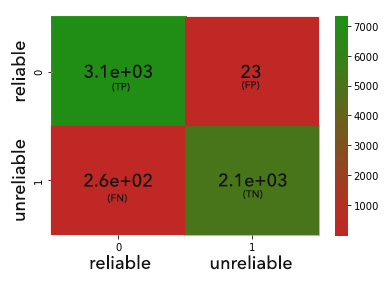
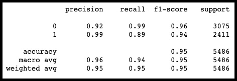

Project Description
Our project is a machine learning exercise in which we used a Naïve Bayes classification model to determine whether a news article is considered a reliable source of information. We utilized Natural Language Processing, Naïve Bayes & Confusion Matrix to build our model to predict these news sources as “unreliable” or “reliable”. Using Naïve Bayes, we determined which words in these articles were more commonly found in unreliable versus reliable, this was the base for our model to make predictions. We utilized WordCloud to visualize the words used in the determined “unreliable” and “reliable” articles to see which topics are common targets of both determinations. Related pairs of words can also be used in scatterplots to show relationships between frequencies and the division between determined “reliable” and “unreliable” articles in the dataset. Our website features a user input search bar on our home page in which you can input your own article to determine whether it is a reliable information source.
Naïve Bayes Model
Naïve Bayes is a supervised machine learning classifier. Naïve Bayes is notedfor being a fast algorithm and being fairly accurate with predicting outcomes but works very well predicting natural language processing (NLP) problems, our project is a NLP problem. We used Naïve Bayes to predict whether or not a news article can be classified as “reliable” or “unreliable” based on certain texts pertaining to their respective “tag words”. Naïve Bayes combines both probability and Bayes’ Theorem to predict the outcome of a text, then categorizes it to a tag word. A good example of Naïve Bayes classification is categorizing emails into “Primary” or “Spam” inboxes based on the text of the email. To put Naïve Bayes simply, “tag words” is synonymous with “categories” and we are trying to decipher snippets of text that can be put into these categories. For the texts, we used the title of the article, the body of the article and a combination of both the title and body of the article to explore the different outcomes and accuracy.
Confusion Matrix
A confusion matrix is a way of testing the performance of a classification algorithm, in our case, we used the confusion matrix to summarize whether our Naïve Bayes classification was performing the way we wanted. We know that from our dataset that there are two classes: “reliable” and “unreliable”, so we used the confusion matrix for a binary classifier, as there are only two predicted classes. Since there are two classes for our project, the 4 quadrants of the confusion matrix model are as follows: True Positives (TP), True Negatives (TN), False Positives (FP) & False Negatives (FN).
The quadrants are described as:
- True Positives (TP): News articles we predicted as “reliable” and they turned out to be “reliable”
- True Negatives (TN): News articles we predicted as “unreliable” and they turned out to be “unreliable”
- False Positives (FP): News articles we predicted as “reliable” and they turned out to be “unreliable”
- False Negatives (FN): News articles we predicted as “unreliable” and they turned out to be “reliable”
Matrix : Training Data

Matrix : Test Data

Following the training data, the model correctly identified 7,300 “reliable” and 5,500 “unreliable” news items out of approximately 12,518 in the set. With the test data, the model predicted 3,100 “reliable” and 2,100 “unreliable” news items out of approximately 5,500 in the set.
- Precision: 99% of predictions of “unreliable” news were accurate, while 92% of predictions of “reliable” news were accurate.
- Recall: 99% of “reliable” items were correctly predicted, while 89% of “unreliable” items were correctly predicted.
- F1 Score: The harmonic average of Precision and Recall provided an F1 Score of 95%.
- Accuracy: Overall, 95% of the predictions made were correct.
Visualizing the Data

Reliable Word Cloud